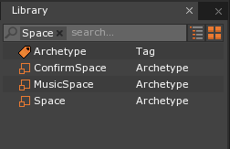
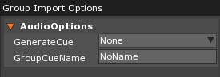
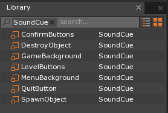
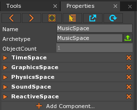

Audio
This lesson covers importing sound files, playing music and sound effects, and persistent objects that are not destroyed in-between level loading/changing. We will use the project completed in the User Interface lesson, adding music and sound effects to our menu and level system.
Learning Objectives
- Create playable SoundCues by importing Sound files
- Add multiple Sounds to one SoundCue
- Create a component allowing SoundCues to persist across level changes
- Add basic sound effects to UI elements
- Become familiar with the basic functions of the SoundSpace
| Vocabulary | |
|---|---|
| SoundSpace | Sound |
| SoundCue | Persistent |
| Pitch | Volume |
Load an Old Project
Load your UI Lesson project from the Zero Launcher
Level Setup
To start this project, we’ll need to make: a Space archetype and and a number of SoundCue resources. We’ll also be importing a number of audio tracks that will automatically create their own Sound resource when imported. The space will act as our “music space” where we will play, pause, and otherwise modify the background music we want to have playing during the different parts of our game.
As you should remember from the User Interface and HUD projects, new Spaces can only be created in code. Therefore, we’ll have to make a new component that makes the space for us, using a space archetype. So before we start writing the new component, let’s quickly make the new archetype we’ll need.
Creating a New Space Archetype
- In the Library window
- Under Space
- Select the archetype
Space, right-click on it, and click on theDuplicateoption
- Select the archetype
- Under Space
You should now have a new space archetype in the library called SpaceCopy1
- Select
SpaceCopy1, right-click on it, and click on theRenameoption- Rename the archetype to:
MusicSpace
- In the Property window
We also need to make a unique Space for the “confirmation” space that was first seen created in the User Interface lesson. The reason being that, at the moment, the ConfirmationPopUp component is creating the confirmation space from the default Space archetype. So, whenever the confirmation window is requested in game, a space made from the same space on which we’ll be playing our background music will get created, causing another instance of the same background music to play on top of the one already playing.
- In the Library window
- Under Space
- Select the archetype
MusicSpace, right-click on it, and click on theDuplicateoption
- Select the archetype
- Under Space
You should now have a new space archetype in the library called MusicSpaceCopy1
- Select
MusicSpaceCopy1, right-click on it, and click on theRenameoption- Rename the archetype to:
ConfirmSpace
- In the Property window
The library window with our new spaces:

Since we’re using a new Space archetype for the confirmation space, we need to go through all the levels that do not have the ConfirmationPopUp component on the LevelSettings object, add the component, and set the ConSpaceArchetype property. First, let’s fix the ConfirmationPopUp component that we already have attached in our menu level.
- In the Objects window
- In the Properties window
- Under ConfirmationPopUp
- Set ConSpaceArchetype to:
ConfirmSpace
- Set ConSpaceArchetype to:
- Under ConfirmationPopUp
Now we need to go through each other level that the menu accesses to add the “ConfirmationPopUp” component.
- In the Library window
- Under Level
- Select and open
GameLevel
- Select and open
- Under Level
- In the Objects window
- In the Properties window
- Add the ConfirmationPopUp component
- Under ConfirmationPopUp
- Set ConSpaceArchetype to:
ConfirmSpace
- Set ConSpaceArchetype to:
- Repeat the last few steps for the
HowToPlayLevelandCreditsLevel
And that completes our work with Spaces...for now.
Importing Sound Files
We now need to import the audio files we’ll be using for this project from the Void, converting them into Sound resources.
- Download and import the ProjectFun_Audio_Assets package from the Void
- In the Group Import Options windows
- Set GenerateCue to:
None(this should be the default setting)
- Set GenerateCue to:

- Click
Import All
Doing this just created Sound resources for each track that was imported. While you can also generate the SoundCue resources as well when importing new audio, we’re going to create those ourselves for reasons you’ll see in the next section. Before we move on, however, let’s spend a brief moment elucidating the differences between the Sound resource and the SoundCue resource.
Sounds and SoundCues
The Sound resource is the raw sound data that was imported into Zero. By itself, it cannot be played; to do that, one must create a SoundCue resource that has the Sound resource as one of its SoundEntry sub-objects. One of the primary reasons they are split up into different resources like this is because you can place multiple Sound resources on the same SoundCue resource. This causes the SoundCue, when played, to randomly choose one of the SoundEntry sub-objects (which use the Sound resources) to play. You can even give each SoundEntry a different “weight”, making it either more or less likely to be randomly chosen to be played.
In the following screenshot, I’ve created a new SoundCue resource named “SoundCueDemo” and have added two SoundEntries under the component Sounds. As you can see, each SoundEntry sub-object has a number of properties, such as Sound, which is where I’ve chosen the Sound resource to play, and Weight, where the probability of one sound playing over another when the SoundCue is triggered can be adjusted. The default value for Weight is 1, meaning there will be an equal chance for either sound to play if left that way.
{kind=link}
With that brief introduction to the Sound and SoundCue resources done, let’s go ahead and create our own SoundCues.
Adding SoundCue Resources
Let’s now make all the SoundCue resources we’ll need for our project.
Background Music Cues
- Add a new SoundCue resource named
MenuBackground. - In the Properties window
- Set PlayMode to:
Looping - Under Sounds
- Click
AddSoundEntry - Under Sound: DefaultSound
- Set Sound to:
jazz_chip_mellow_1
- Set Sound to:
- Click
- Set PlayMode to:
- Add a new SoundCue resource named
GameBackground. - In the Properties window
- Set PlayMode to:
Looping - Under Sounds
- Click
AddSoundEntry - Under Sound: DefaultSound
- Set Sound to:
jazz_chip_mystery_1
- Set Sound to:
- Click
- Set PlayMode to:
Button Press Cues
- Add a new SoundCue resource named
LevelButtons. - In the Properties window
- Under Sounds
- Click
AddSoundEntry - Under Sound: DefaultSound
- Set Sound to:
CollectKey
- Set Sound to:
- Click
- Under Sounds
- Add a new SoundCue resource named
QuitButton. - In the Properties window
- Under Sounds
- Click
AddSoundEntry - Under Sound: DefaultSound
- Set Sound to:
DefeatFanfare
- Set Sound to:
- Click
- Under Sounds
- Add a new SoundCue resource named
ConfirmButtons. - In the Properties window
- Under Sounds
- Click
AddSoundEntry - Under Sound: DefaultSound
- Set Sound to:
CollectHeart
- Set Sound to:
- Click
- Under Sounds
Game Sound Effect Cues
- Add a new SoundCue resource named
SpawnObject. - In the Properties window
- Under Sounds
- Click
AddSoundEntry - Under Sound: DefaultSound
- Set Sound to:
CollectGem
- Set Sound to:
- Click
AddSoundEntryagain - Under Sound: DefaultSound
- Set Sound to:
CollectCoin
- Set Sound to:
- Click
- Under Sounds
- Add a new SoundCue resource named
DestroyObject. - In the Properties window
- Under Sounds
- Click
AddSoundEntry - Under Sound: DefaultSound
- Set Sound to:
Freeze impact-10
- Set Sound to:
- Click
AddSoundEntryagain - Under Sound: DefaultSound
- Set Sound to:
Freeze impact-18
- Set Sound to:
- Click
- Under Sounds
And that should do it. You should now have seven different SoundCues listed in the Library window under SoundCue:

Now that we’ve done the initial setup, let’s make the component that will allow us to continue playing the same SoundCue over multiple levels.
Creating the PersistentSound Component
Spaces by their nature are persistent objects. That is, they persist even when new levels are loaded. Therefore, one of the quickest and easiest ways to maintain persistent audio is to have it playing in a Space. Through code, we can control the audio playing in the Space by stopping it, pausing it, lowering and raising the volume, and many other options when needed. So, let’s go over what our PersistentSound component will need.
Variables
BackgroundMenuMusic- ASoundCuevariable with the Property attribute where we will select the audio track we wish to play persistently on most of the levelsBackgroundGameMusic- A SoundCue variable with the Property attribute where we will select the audio track we wish to play onGameLevelonlyBackgroundMusicSpaceArch- AnArchetypevariable with the Property attribute where we will select theSpacearchetype needed to create the new SpaceMusicLevel- ALevelvariable with the Properyt attribute where we will select a level to load so we can play aSoundCueon itBackgroundMenuMusicSpace- A Space variable that will hold a reference to the Space created to play the menu musicBackgroundGameMusicSpace- A Space variable that will hold a reference to the Space created to play the game music
This component needs to accomplish the following objectives:
- Check to see which level we’re in, as we have two different background music tracks to play depending on if we’re on the game level or any other level
- If we’re on the game level, create a new space to play the game music while also destroying the space created to play the menu music if it currently exists (which it always should, since we start on the main menu level)
- If we’re on the main menu level, create a new space to play the menu music while also destroying the space created to play the game music if it currently exists (it will only exist if we go to the game level and then return to the menu)
- If we’re playing the menu music, it must continue to play persistently even if we change to the “How to Play” or “Credits” levels
The LevelStarted Event
Our component will be making use of the built-in event LevelStarted. It is an event dispatched onto the space once a level has been loaded. We need to use this particular event to make sure that once the level has loaded, we immediately start playing the background music. It also conveniently gives us the name of the current level we’re in as a data member, which we’ll use to figure out whether we’re in Level (the main menu level) or GameLevel.
The SoundSpace
While there are a few ways to play a SoundCue in the Zero Engine, the simplest method of doing so within a script is by accessing the SoundSpace. Go to the Library window and select either the Space or MusicSpace Archetypes, then at the Properties window you’ll see a number of components. The fourth one down from the top should be the SoundSpace component.

While there are no properties available when you try to expand the component, there are many member properties and functions to be found in the SoundSpace when accessing it through code. Feel free to take a look through them when we write the component. The only one we need to concern ourselves with right now, however, is the PlayCue() function, which takes in a SoundCue resource as an argument and plays it.
Adding the PersistentSound Component
This is going to be a long script, so let’s split it up into three parts. Remember that you’ll need to have written the entire code from the following three blocks before it will correctly compile.
The Variables
- Add a new ZilchScript resource called
PersistentSound - Update the
PersistentSoundscript with the following code:
class PersistentSound : ZilchComponent
{
// The SoundCue to be played persistently in the Main Menu, How to Play,
// and Credits levels
[Property]
var BackgroundMenuMusic : SoundCue;
// The SoundCue to be played on the Game Level
[Property]
var BackgroundGameMusic : SoundCue;
// The space archetype by which the new music space will be created
[Property]
var BackgroundMusicSpaceArch : Archetype;
//Level to load on the new music space
[Property]
var MusicLevel : Level = null;
// A reference for the Menu Level's (Level, HowToPlayLevel, CreditsLevel) music space
var BackgroundMenuMusicSpace : Space;
// A reference for the Game Level's music space
var BackgroundGameMusicSpace : Space;
BackgroundMenuMusic- aSoundCuevariable with the Property attribute where we will set the music to play over all levels except the gamelevel.BackgroundGameMusic- aSoundCuevariable with the Property attribute where we will set the music to play over the gamelevel.BackgroundMusicSpaceArch- anArchetypevariable with the Property attribute where we will set thespacearchetypeto use when creating our new spacesMusicLevel- alevelvariable with the Property attribute where we select thelevelresource to load into the musicspacesBackgroundMenuMusicSpace- aspacevariable that hold a reference to the newly createdspaceon which to play the menu musicBackgroundGameMusicSpace- aspacevariable that hold a reference to the newly createdspaceon which to play the game music
Playing the Background Music, Part One
- Add the following code to the
PersistentSoundscript directly after where theBackgroundGameMusicSpacevariable is defined:
function Initialize(init : CogInitializer)
{
// Connect to event dispatched when a level is started
Zero.Connect(this.Space, Events.LevelStarted, this.OnLevelStarted);
}
// Response function called when the LevelStarted event is heard
function OnLevelStarted(event : GameEvent)
{
// Check to see if we're in the game level
if(event.LevelName == "GameLevel")
{
// If the space for the Menu Music exists...
if(this.BackgroundMenuMusicSpace != null)
{
// Destroy it, so we don't have two different cues overlapping
this.BackgroundMenuMusicSpace.Destroy();
}
// Safety measure to make sure we don't make a copy of the same space
// Will most likely never be true
if(this.BackgroundGameMusicSpace != null)
{
Console.WriteLine("You almost created the same space twice!");
this.BackgroundGameMusicSpace.Destroy();
}
// Create a new space for the background game music
this.BackgroundGameMusicSpace = this.GameSession.CreateSpace(this.BackgroundMusicSpaceArch);
// Load the music level so we can play the background music
this.BackgroundGameMusicSpace.LoadLevel(this.MusicLevel);
// Play the background game music cue from the sound space
this.BackgroundGameMusicSpace.SoundSpace.PlayCue(this.BackgroundGameMusic);
}
In Initialize(), all we’re doing is connecting to the LevelStarted event. As the name suggests, this event is dispatched when the level that the component is in starts (i.e., is loaded). While you might wonder why we don’t just put all the logic into the Initialize() function, as that will also get called as soon as the level is loaded. The reason, in this case and in most cases where you will use this event, has its basis in the object load order.
If you were to put the code found in OnLevelStarted() in Initialize() (and used a different method to check for the name of the level), the script would not compile. You would be informed that the level you are checking for is a null object. And if you think about it, at that point, it is. The Initialize() function is called before the level is properly loaded. The OnLevelStarted() function, on the other hand, will not run until after the level has fully loaded, as its name implies. That is why we are able to check the name and figure out where in the game we are.
The first half of the OnLevelStarted() function in the code-block above first checks to see if the current level is named “GameLevel”. If it is, we then make sure no other music spaces currently exist; if they did exist, we destroy them so that we don’t have overlapping spaces playing the same SoundCue.
The last three lines of code do the heavy lifting:
- First, a new
spaceis created solely to play the background music for the gamelevel. - Second, a
levelis loaded into thatspace(for reasons too many to go into in this lesson, alevelis required to play aSoundCue) - Third, the
SoundCuewe chose as the background music for the gamelevelis played on the SoundSpace.
Playing the Background Music, Part Two
- Add the following code to the
PersistentSoundscript directly the last curly brace at the end of the previous code-block:
// Check to see if we're in the main menu level
else if(event.LevelName == "Level")
{
// If the space for the Game music exists...
if(this.BackgroundGameMusicSpace != null)
{
// Destroy it so we don't have two different cues overlapping
this.BackgroundGameMusicSpace.Destroy();
}
// If this is currently no space for the menu's background music
if(this.BackgroundMenuMusicSpace == null)
{
// Create the space and assign to our menu music space variable
this.BackgroundMenuMusicSpace = this.GameSession.CreateSpace(this.BackgroundMusicSpaceArch);
// Load the music level so we can play the menu music
this.BackgroundMenuMusicSpace.LoadLevel(this.MusicLevel);
// Play the menu background music cue from the sound space
this.BackgroundMenuMusicSpace.SoundSpace.PlayCue(this.BackgroundMenuMusic);
}
}
}
}
This is the second half of the OnLevelStarted() function, where we now check to see if the level name is Level, which is our main menu level. Again, we check to see if either of the music spaces exist, and if so, destroy them.
The last three lines follow the exact same format as the ones from the previous code-block. The space is created, the level is loaded, and the SoundCue is played.
Before we add this component, we need to create one more object necessary for this system to work.
Creating the Music Level
The last thing we need to do before we attach this component is to make a new level that will be loaded onto the new music spaces. The SoundSpace requires a level to be loaded to play a SoundCue. If we just loaded the default level, it would block out everything else, just like we saw in the HUD lesson. So we don’t run into this problem, we need to make a new level that has a couple of settings turned off.
- Add a new Level resource called
MusicLevel - In the Objects window
- In the Properties window
- Under CameraViewport
- Set Background to:
false - Set Blocking to:
false
- Set Background to:
- Under CameraViewport
- Save your project
Now we’re ready to attach the component and set its properties.
Attaching the PersistentSound Component
Since we want to start the background music as soon as the game starts, and as the Space for the music does not yet exist, we’ll need to add this component somewhere it will be used immediately once the game has started. That place, surprisingly enough, is the default Space archetype. When the game starts, the main Space is created using the default archetype and loads whichever level is set as the starting level. As we want the background music to play at this start point, we can add this component to the default Space archetype that is used to create the initial, main Space for the game.
- In the Library window
- Under Space
- Select and open
Space
- Select and open
- Under Space
- In the Property window
- Add the PersistentSound component
- Under PersistentSound
- Set BackgroundMenuMusic to:
MenuBackground - Set BackgroundGameMusic to:
GameBackground - Set BackgroundMusicSpaceArch to:
MusicSpace - Set MusicLevel to:
MusicLevel
- Set BackgroundMenuMusic to:
- Press the green Upload to Archetype button
- Save your project and run the game
You should now be hearing music playing over the main menu. Try going to the “how to play” and “credits” levels as well; the music should keep playing uninterrupted. Now try going to the “game” level. The music currently playing should stop and a new music track should start. If you click on the “Return to Main Menu” button, the game music will stop and the menu music start back up.
So, now we have background music for our menu and game. It’s now time to add some effect sounds to our various buttons throughout the project.
Adding Button Sound Effects
As you probably guessed when we were making the SoundCues above, we will be using three different sounds depending on which button is currently being clicked. While we could make a new component to handle this, we can save time by just making a few changes to our button manager components (UIButton and UIMenuManager). This also allows us to easily add sound effects to any new buttons we may create later on. Logically, we should start making changes inside the UIButton script, as it contains the class that defines the UIButtonEvent custom event.
The UIButton Component
If you recall from the User Interface lesson, the UIButtonEvent custom event is the event that contains all the relevant information for each button–its state: default, hovered, or clicked; its Cog; and the level to load if clicking the button should load a new level. Therefore, it makes perfect sense that we should now add the SoundCue to play when the button is clicked to the event information.
- In the
UIButtonscript, replace the following code:
class UIButtonEvent : ZilchEvent
{
// Registers UIButtonEvent as the custom event's string type identifier
sends UIButtonEvent : UIButtonEvent;
// Button that underwent a state change
var Button : Cog = null;
// The current state of the button
var State : ButtonState = ButtonState.Default;
// The level to load when the button is clicked
var LevelToLoad : Level = null;
}
with:
class UIButtonEvent : ZilchEvent
{
// Registers UIButtonEvent as the custom event's string type identifier
sends UIButtonEvent : UIButtonEvent;
// Button that underwent a state change
var Button : Cog = null;
// The current state of the button
var State : ButtonState = ButtonState.Default;
// The Sound to play when the button is pressed
var ButtonSound : SoundCue = null;
// The level to load when the button is clicked
var LevelToLoad : Level = null;
}
In the UIButton class itself, the first thing we need to do is add a new SoundCue variable with the Property attribute so that we can choose which sound effect we want to play for each button.
- In the
UIButtonscript, add the following code to the list of global variables, directly above theInitialize()function:
//The Sound Cue to play when the button is pressed
[Property]
var SoundToPlay : SoundCue = null;
The last thing we need to do in this script is to set the value of our new event variable (i.e., ButtonSound) to our new component variable (i.e., SoundToPlay) so that it’s sent out with the event dispatch.
- In the
UIButtonscript, replace the following code:
function DispatchState()
{
// Creates a new instance of the UIButtonEvent custom event
var buttonEvent : UIButtonEvent = new UIButtonEvent();
// Sets the information to be sent with the event
buttonEvent.Button = this.Owner;
buttonEvent.State = this.CurState;
buttonEvent.LevelToLoad = this.LevelToLoad;
//Dispatches the event onto the space
this.Space.DispatchEvent(Events.UIButtonEvent, buttonEvent);
}
with:
function DispatchState()
{
// Creates a new instance of the UIButtonEvent custom event
var buttonEvent : UIButtonEvent = new UIButtonEvent();
// Sets the information to be sent with the event
buttonEvent.Button = this.Owner;
buttonEvent.State = this.CurState;
buttonEvent.ButtonSound = this.SoundToPlay;
buttonEvent.LevelToLoad = this.LevelToLoad;
//Dispatches the event onto the space
this.Space.DispatchEvent(Events.UIButtonEvent, buttonEvent);
}
Now we need to make a few changes to the second part of our button management system, the UIMenuManager component.
Setting the Sound Effect SoundCues
Buttons on Other Levels
In the Library window
- Under Level
- Select and open
GameLevel
In the Objects window
In the Properties window
- Under UIButton
- Set SoundToPlay to:
LevelButtons
- Repeat the previous steps on the following levels:
HowToPlayLevelandCreditsLevel
Confirmation Buttons
- In the Library window
- Under Level
- Select and open
ConfirmLevel
- Select and open
- Under Level
- In the Objects window
In the Properties window
- Under UIButton
- Set SoundToPlay to:
ConfirmButtons
- Repeat the previous steps for the
ConfirmNoButton - Save your project and run the game
Navigate your way around the menu and levels. You should be hearing different sound effects depending on which button you are pressing. Now we have not only background music, but sound effects too.
For the final part of this project, let’s add a little bit more code to our PersistentSound component that will makes changes to the the sounds currently playing based on keyboard input.
Changing Properties on the SoundSpace
On the SoundSpace, you can have direct control over such things as volume, pitch, and whether or not the sounds are paused. Let’s add functionality to our PersistentSound component that lets the user directly control these properties through key presses.
First, we need to add two new variables to our list of global variables that will allow us to set the value by which we increase or decrease both the volume and pitch. Then we’ll connect to the KeyDown event in the Initialize() function.
- In the
PersistentSoundscript, add the following code at the end of the global variable list, directly above theInitialize()function:
// The value by which to increase or decrease the volume of all cues on the SoundSpace
[Property]
var VolumeScalar : Real = 0.0;
// The value by which to increase or decrease the pitch of all cues on the SoundSpace
[Property]
var PitchScalar : Real = 0.0;
- In the
PersistentSoundscript, replace the following code:
function Initialize(init : CogInitializer)
{
// Connect to event dispatched when a level is started
Zero.Connect(this.Space, Events.LevelStarted, this.OnLevelStarted);
}
with
function Initialize(init : CogInitializer)
{
// Connect to event dispatched when a level is started
Zero.Connect(this.Space, Events.LevelStarted, this.OnLevelStarted);
// Connect to the KeyDown event dispatched on to the keyboard
Zero.Connect(Zero.Keyboard, Events.KeyDown, this.OnKeyDown);
}
Finally, we add all of our logic for changing the volume and scale as well as toggling pause in the OnKeyDown() response function.
- Update the
PersistentSoundscript with the following, so that theOnKeyDown()function starts directly afterOnLevelStarted()function :
// Change the volume, pitch, or toggle the pause on the SoundSpace based on keyboard input
function OnKeyDown(event : KeyboardEvent)
{
if(event.Key == Keys.Right)
{
// If the background menu music space exists...
if(this.BackgroundMenuMusicSpace != null)
{
// Increase the volume of the background menu music by the volume scalar
this.BackgroundMenuMusicSpace.SoundSpace.Volume += this.VolumeScalar;
}
// If the background game music space exists...
else if(this.BackgroundGameMusicSpace != null)
{
// Increase the volume of the background game music by the volume scalar
this.BackgroundGameMusicSpace.SoundSpace.Volume += this.VolumeScalar;
}
}
else if(event.Key == Keys.Left)
{
// If the background game music space exists...
if(this.BackgroundMenuMusicSpace != null)
{
// Decrease the volume of the background menu music by the volume scalar
this.BackgroundMenuMusicSpace.SoundSpace.Volume -= this.VolumeScalar;
}
// If the background game music space exists...
else if(this.BackgroundGameMusicSpace != null)
{
// Decrease the volume of the background game music by the volume scalar
this.BackgroundGameMusicSpace.SoundSpace.Volume -= this.VolumeScalar;
}
}
else if(event.Key == Keys.Up)
{
// If the background menu music space exists...
if(this.BackgroundMenuMusicSpace != null)
{
// Increase the pitch of the background menu music by the pitch scalar
this.BackgroundMenuMusicSpace.SoundSpace.Pitch += this.PitchScalar;
}
// If the background game music space exists...
else if(this.BackgroundGameMusicSpace != null)
{
// Increase the pitch of the background game music by the pitch scalar
this.BackgroundGameMusicSpace.SoundSpace.Pitch += this.PitchScalar;
}
}
else if(event.Key == Keys.Down)
{
// If the background game music space exists...
if(this.BackgroundMenuMusicSpace != null)
{
// Decrease the pitch of the background menu music by the pitch scalar
this.BackgroundMenuMusicSpace.SoundSpace.Pitch -= this.PitchScalar;
}
// If the background game music space exists...
else if(this.BackgroundGameMusicSpace != null)
{
// Decrease the pitch of the background game music by the pitch scalar
this.BackgroundGameMusicSpace.SoundSpace.Pitch -= this.PitchScalar;
}
}
if(event.Key == Keys.Space)
{
// If the background game music space exists...
if(this.BackgroundMenuMusicSpace != null)
{
// Toggle the pause property on the SoundSpace
this.BackgroundMenuMusicSpace.SoundSpace.Pause = !this.BackgroundMenuMusicSpace.SoundSpace.Pause;
}
// If the background game music space exists...
else if(this.BackgroundGameMusicSpace != null)
{
// Toggle the pause property on the SoudnSpace
this.BackgroundGameMusicSpace.SoundSpace.Pause = !this.BackgroundGameMusicSpace.SoundSpace.Pause;
}
}
}
The last step is to set the new properties on our PersistentSound component on the Space archetype.
- In the Library window
- Under Space
- Select
Space
- Select
- Under Space
- In the Properties window
- Under PersistentSound
- Set VolumeScalar to:
0.15 - Set PitchScalar to:
0.05
- Set VolumeScalar to:
- Press the green Upload to Archetype button
- Under PersistentSound
- Save your project and run the game
Now when you press the Right arrow the volume will increase, while the Left arrow decreases it; when you press the Up arrow, the pitch increases, while the Down arrow decreases it; when you press the Space button, and the SoundSpace is not currently paused, all SoundCues on the SoundSpace will pause, while if you press Space and the SoundSpace is currently paused, all the SoundCues will resume where they left off when they were paused.
Playing Multiple Sounds on the Same SoundCue
The last thing we’ll do is show what happens when there are multiple Sounds on the same SoundCue. As you may have noticed at the beginning of the lesson, we already created two SoundCues with two different Sound resources on them. As explained above, the Weight property, which can be set to give a particular Sound a higher probability of playing over others, has been left at its default value, keeping them equally probable of playing. Since playing these cues has nothing to do with our persistent sounds, we’ll need to make a new component for it.
- Add a new ZilchScript resource called
PlayRandomSound - Update the
PlayRandomSoundscript with the following code:
class PlayRandomSound : ZilchComponent
{
// Sound cue for spawning objects
[Property]
var SpawnCue : SoundCue = null;
// Sound cue for destroying objects
[Property]
var DestroyCue : SoundCue = null;
function Initialize(init : CogInitializer)
{
Zero.Connect(this.Space, Events.LeftMouseDown, this.OnLeftMouseDown);
Zero.Connect(this.Space, Events.RightMouseDown, this.OnRightMouseDown);
}
// Response function to left mouse button clicked
function OnLeftMouseDown(event : ViewportMouseEvent)
{
// Play Spawn cue on the sound space
this.Space.SoundSpace.PlayCue(this.SpawnCue);
}
// Response function to the right mouse button clicked
function OnRightMouseDown(event : ViewportMouseEvent)
{
// Play Destroy cue on the sound space
this.Space.SoundSpace.PlayCue(this.DestroyCue);
}
}
This is a very simple script, which simply plays the SoundCue for spawning an object when the left mouse button is clicked and the SoundCue for destroying an object when the right mouse button is clicked.
For the sake of isolating the effect, let’s place this on the “Game” level.
- In the Library window
- Under Level
- Select and open
GameLevel
- Select and open
- Under Level
- In the Objects window
- In the Properties window
- Add the PlayRandomSound component
- Under PlayRandomSound
- Set SpawnCue to:
SpawnObject - Set DestroyCue to:
DestroyObject
- Set SpawnCue to:
- Save your project and run the game
Press the left-mouse button repeatedly. You should be hearing two distinct Sounds playing. Do the same for the right-mouse button. Feel free to play with the Weight property in the two SoundCues to see how it affects the occurrence of each Sound.
Now you know how to import sounds, make SoundCues, and play SoundCues from the SoundSpace. You’ve also learned how to change the volume, pitch, and pause properties of the SoundSpace. Finally, you learned how to play multiple Sounds from one SoundCue.